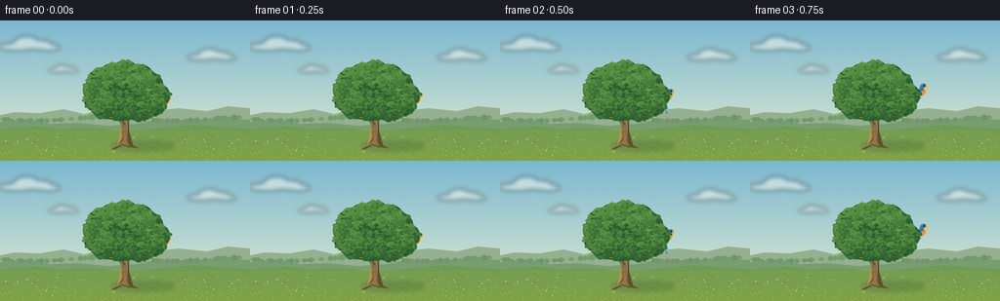
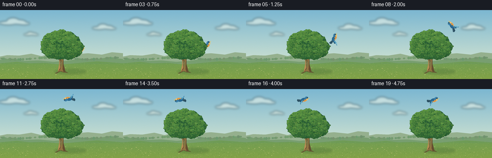

CODING AGENTS AS PIXEL WORLD MODELS
traex/GPT-6.1-Sol · dynamic_spatial_relationship_0051
点击播放 · 原生 RGB 像素
逐轮保存的候选
回放视频、检查图与代码变化。
每份候选均可单独播放。实际图片检查记录在下方工具轨迹中。
候选 01播放与检查图
点击播放 · 原生 RGB 像素


展开代码变化
--- 上一保存版本
+++ 本次保存版本
@@ -0,0 +1,170 @@
+from pathlib import Path
+import math
+import numpy as np
+from PIL import Image, ImageDraw, ImageFilter
+from artifact_io import save
+
+ROOT=Path(__file__).resolve().parent
+W,H,S=256,144,4
+rng=np.random.default_rng(84)
+
+def ellipse(d,box,fill,outline=None,width=1):
+ d.ellipse(tuple(int(round(v*S)) for v in box),fill=fill,outline=outline,width=max(1,int(width*S)))
+def poly(d,pts,fill):
+ d.polygon([(round(x*S),round(y*S)) for x,y in pts],fill=fill)
+def line(d,pts,fill,width=1):
+ d.line([(round(x*S),round(y*S)) for x,y in pts],fill=fill,width=max(1,round(width*S)),joint='curve')
+def bez(points,n=30):
+ ps=np.array(points,float); t=np.linspace(0,1,n)
+ if len(ps)==4:
+ return ((1-t)**3)[:,None]*ps[0]+(3*(1-t)**2*t)[:,None]*ps[1]+(3*(1-t)*t*t)[:,None]*ps[2]+(t**3)[:,None]*ps[3]
+ return ((1-t)**2)[:,None]*ps[0]+(2*(1-t)*t)[:,None]*ps[1]+(t*t)[:,None]*ps[2]
+
+y,x=np.mgrid[0:H*S,0:W*S]
+f=y/(H*S)
+sky0=np.array([124,183,209]); sky1=np.array([230,238,209])
+a=sky0[None,None,:]*(1-f[:,:,None])+sky1[None,None,:]*f[:,:,None]
+# Golden daylight, fine film-like texture.
+noise=rng.normal(0,.6,(H*S,W*S,1))
+a=np.clip(a+noise,0,255).astype(np.uint8)
+bg=Image.fromarray(a,'RGB')
+cloud=Image.new('RGBA',bg.size)
+d=ImageDraw.Draw(cloud)
+for cx,cy,sc in [(31,25,1),(217,36,.8),(65,50,.5)]:
+ for dx,dy,rx,ry in [(-14,2,18,4),(-4,-2,13,7),(9,0,14,5),(19,3,12,3)]:
+ ellipse(d,(cx+(dx-rx)*sc,cy+(dy-ry)*sc,cx+(dx+rx)*sc,cy+(dy+ry)*sc),(255,255,239,120))
+cloud=cloud.filter(ImageFilter.GaussianBlur(2.4*S)); bg=Image.alpha_composite(bg.convert('RGBA'),cloud).convert('RGB')
+d=ImageDraw.Draw(bg)
+poly(d,[(0,97),(15,94),(40,95),(65,91),(86,96),(103,92),(127,97),(150,93),(183,90),(212,93),(233,88),(256,90),(256,144),(0,144)],(149,176,142))
+poly(d,[(0,104),(22,101),(50,106),(80,105),(111,108),(139,106),(167,101),(194,103),(224,99),(256,102),(256,144),(0,144)],(120,158,112))
+# Small far hedgerow, softened by distance.
+for i in range(90):
+ xx=float(rng.uniform(0,256)); yy=101+2*math.sin(xx/23)
+ r=float(rng.uniform(1.0,3))
+ ellipse(d,(xx-r,yy-r,xx+r,yy+r),(116+int(rng.integers(-7,8)),152+int(rng.integers(-6,7)),111))
+poly(d,[(0,111),(35,108),(62,111),(94,110),(126,114),(167,110),(202,107),(256,111),(256,144),(0,144)],(111,155,86))
+# Meadow gradient with organically curved sunlit field.
+ground=Image.new('RGBA',bg.size)
+gd=ImageDraw.Draw(ground)
+for yy in np.arange(113,144,.25):
+ k=(yy-113)/31
+ line(gd,[(0,yy),(256,yy)],(int(116+14*k),int(158+4*k),int(81-11*k),255),.3)
+bg=Image.alpha_composite(bg.convert('RGBA'),ground).convert('RGB')
+d=ImageDraw.Draw(bg)
+# Sunlit grass and tiny field flowers.
+for _ in range(1250):
+ xx=float(rng.uniform(0,256)); yy=float(rng.uniform(110,146)); depth=(yy-110)/36
+ hh=float(rng.uniform(.35,2.2))*(.3+depth)
+ col=[(137,169,92),(162,185,104),(87,133,67),(110,148,70),(184,194,112)][int(rng.integers(5))]
+ line(d,[(xx,yy),(xx+rng.uniform(-.8,.8),yy-hh)],col,.17+.1*depth)
+for _ in range(52):
+ xx=float(rng.uniform(0,256)); yy=float(rng.uniform(119,143)); rr=float(rng.uniform(.25,.6))
+ line(d,[(xx,yy+1.2),(xx,yy)],(69,122,64),.25)
+ ellipse(d,(xx-rr,yy-rr/2,xx+rr,yy+rr/2),(244,220,151))
+# A soft grounded shadow stretches away from the sun.
+shadow=Image.new('RGBA',bg.size); sd=ImageDraw.Draw(shadow)
+ellipse(sd,(113,123,180,134),(29,66,38,47))
+shadow=shadow.filter(ImageFilter.GaussianBlur(2*S))
+bg=Image.alpha_composite(bg.convert('RGBA'),shadow).convert('RGB')
+
+# The tree is a separate foreground layer, so the initial bird is genuinely occluded.
+tree=Image.new('RGBA',bg.size); td=ImageDraw.Draw(tree)
+# Trunk taper and spreading roots.
+poly(td,[(120,129),(124,114),(123,95),(119,80),(126,77),(132,95),(132,113),(136,128),(142,131),(131,130),(126,128),(118,132),(114,132)],(99,77,48,255))
+poly(td,[(120,129),(126,123),(127,101),(125,85),(128,82),(131,101),(130,124),(132,129),(126,127)],(147,115,66,255))
+poly(td,[(120,129),(123,113),(123,96),(119,80),(122,82),(126,101),(125,121)],(181,140,83,255))
+# Forks, visible through irregular gaps in canopy.
+for pts,width in [([(127,108),(117,91),(108,85)],3.7), ([(128,100),(140,88),(148,84)],3.5), ([(125,95),(125,73),(119,63)],3.4), ([(126,90),(111,78),(102,76)],2.8), ([(130,95),(145,78),(150,70)],2.5)]:
+ line(td,pts,(100,80,44,255),width)
+ line(td,[(px-.6,py-.1) for px,py in pts],(160,123,67,255),width*.24)
+for i in range(12):
+ xx=124+i*.5
+ line(td,[(xx,105+rng.uniform(-3,3)),(xx+.2,117+rng.uniform(-3,3))],(105,84,51,130),.2)
+# Organic crown built from richly varied leaf boughs, shaded underneath.
+lobes=[(100,82,14,12),(97,72,12,12),(104,62,15,13),(115,55,13,11),
+ (128,53,14,12),(143,57,14,12),(153,66,14,13),(162,77,12,12),
+ (155,87,15,11),(143,91,16,12),(123,91,17,12),(109,89,16,12),
+ (119,73,22,19),(141,73,21,19)]
+for cx,cy,rx,ry in lobes:
+ ellipse(td,(cx-rx,cy-ry,cx+rx,cy+ry),(40,93,52,255))
+# Foliage clusters track the crown volume with warmer highlights at upper left.
+for cx,cy,rx,ry in lobes:
+ for j in range(125):
+ ang=rng.uniform(0,2*math.pi); rr=math.sqrt(rng.uniform(0,1))
+ xx=cx+math.cos(ang)*rr*rx; yy=cy+math.sin(ang)*rr*ry
+ r=rng.uniform(.65,2.35)
+ light=np.clip(.54-(yy-cy)/(2.6*ry)-(xx-cx)/(4*rx)+rng.uniform(-.18,.18),0,1)
+ col=(int(36+62*light),int(88+65*light),int(45+24*light),255)
+ ellipse(td,(xx-r*1.15,yy-r*.7,xx+r*1.15,yy+r*.7),col)
+# Leaf sprays break silhouette, plus little glints around the lit crown.
+for _ in range(330):
+ cx,cy,rx,ry=lobes[int(rng.integers(len(lobes)))]
+ ang=rng.uniform(0,math.pi*2); rr=rng.uniform(.5,1.02)
+ xx=cx+math.cos(ang)*rx*rr; yy=cy+math.sin(ang)*ry*rr
+ col=(int(rng.integers(73,117)),int(rng.integers(130,162)),int(rng.integers(51,81)),255)
+ ellipse(td,(xx-.75,yy-.35,xx+.75,yy+.35),col)
+# Darker small dangling leaves toward the lower silhouette.
+for _ in range(25):
+ xx=rng.uniform(99,161); yy=94+4*math.sin((xx-102)/15)+rng.uniform(-2,2)
+ ellipse(td,(xx-.8,yy-1,xx+.8,yy+1),(46,102,52,255))
+
+# Local bird drawing, transformed as a whole along its climbing trajectory.
+def bird_layer(cx,cy,angle,phase):
+ im=Image.new('RGBA',(100*S,80*S)); dd=ImageDraw.Draw(im)
+ ox,oy=48,39
+ def P(pts,col): poly(dd,[(ox+xx,oy+yy) for xx,yy in pts],col)
+ def E(box,col): ellipse(dd,(ox+box[0],oy+box[1],ox+box[2],oy+box[3]),col)
+ def L(pts,col,w): line(dd,[(ox+xx,oy+yy) for xx,yy in pts],col,w)
+ flap=math.sin(phase)
+ wingtip=-12.8*flap-1.5
+ # Far wing, partly hidden by the body.
+ P([(-1,-1),(-5,wingtip*.9),(-9,wingtip*.75),(-6,1),(1,2)],(35,83,112,255))
+ # Fan tail, finely edged with white.
+ P([(-4,-.6),(-13,-3),(-14,-.3),(-12,2.7),(-4,2.3)],(37,71,89,255))
+ L([(-12.8,-1.6),(-5.1,.4)],(114,172,190,255),.6)
+ L([(-12.2,1.8),(-5.1,1.2)],(89,141,169,255),.5)
+ E((-6,-3.4,6,3.8),(38,100,143,255))
+ E((-3,-.2,6,4.3),(226,153,68,255))
+ E((2.3,-5.6,9.9,1.6),(54,123,167,255))
+ E((5.1,-.9,8.8,2.4),(242,188,102,255))
+ # Forward yellow beak and glossy eye.
+ P([(9,-2),(12.8,-.9),(9,.1)],(231,185,81,255))
+ E((6.8,-3.7,8.5,-2),(18,27,30,255))
+ E((7.0,-3.6,7.55,-3.05),(255,255,234,255))
+ L([(4.1,-4.8),(7.7,-4.6)],(128,194,214,255),.5)
+ # Near wing with articulated flight feathers and clear silhouette.
+ pts=[(-2,-1),(-4,wingtip*.42),(-5,wingtip),(-7.0,wingtip-1),(-8,wingtip+.9),(-8.7,wingtip+2.2),(-8.3,wingtip+4),(-6,wingtip*.3),(0,2.2),(2,.6)]
+ P(pts,(35,104,151,255))
+ P([(-1,-1),(-4.5,wingtip*.7),(-5.5,wingtip),(-6.6,wingtip+.3),(-6,wingtip*.4),(-2,1)],(65,149,194,255))
+ for k in range(3):
+ L([(-2.8-k*.8,wingtip*.28+.5),(-5.6-k,wingtip+1.4+k)],(112,182,205,255),.45)
+ L([(-3.1,3.1),(-4.1,4.6),(-2.7,4.8)],(75,54,37,255),.5)
+ rotated=im.rotate(angle, resample=Image.Resampling.BICUBIC,center=(ox*S,oy*S))
+ layer=Image.new('RGBA',bg.size)
+ layer.alpha_composite(rotated,(round((cx-ox)*S),round((cy-oy)*S)))
+ return layer
+
+# A smooth climb around the right edge, then across the open sky over the crown.
+# Coordinates are temporally continuous, with no camera or scene cuts.
+positions=[(166,84),(168,82),(170,79),(174,74),(180,67),(183,59),(183,50),
+ (179,41),(172,33),(163,27),(153,23),(143,21),(133,21),(125,22),
+ (118,23),(116,24),(120,22),(125,21),(130,22),(134,23)]
+frames=[]
+for i,(bx,by) in enumerate(positions):
+ if i<6: angle=20+7*i
+ elif i<11: angle=75+(i-6)*20
+ elif i<15: angle=174
+ else: angle=10 if i>=16 else 150
+ phase=i*2.15+.7
+ scene=bg.convert('RGBA')
+ scene=Image.alpha_composite(scene,bird_layer(bx,by,angle,phase))
+ scene=Image.alpha_composite(scene,tree)
+ # Foreground grass strokes at tree foot help anchor the trunk.
+ dd=ImageDraw.Draw(scene)
+ for j in range(19):
+ xx=116+j*1.3; yy=130+1.2*math.sin(j*2.3)
+ line(dd,[(xx,yy),(xx-.6,yy-1.8-(j%3)*.45)],(87,132,61,255),.35)
+ frame=scene.convert('RGB').resize((W,H),Image.Resampling.LANCZOS)
+ frames.append(np.asarray(frame,dtype=np.uint8))
+save(np.stack(frames),ROOT)
+print('Saved 20 RGB frames at 256x144, 4 fps.')
可观测工具轨迹
实际执行的命令与返回图片。
命令 1exit 0
/bin/bash -lc 'ls -la; cat prompt.txt; cat GENERATION_RULES.md; cat task_spec.json'
命令 2exit 0
/bin/bash -lc "cat artifact_io.py; python - <<'PY'
import PIL, numpy
print('PIL and numpy ready')
PY"命令 3exit 0
/bin/bash -lc "cat > generate.py <<'PY'
from pathlib import Path
import math
import numpy as np
from PIL import Image, ImageDraw, ImageFilter
from artifact_io import save
ROOT=Path(__file__).resolve().parent
W,H,S=256,144,4
rng=np.random.default_rng(84)
def ellipse(d,box,fill,outline=None,width=1):
d.ellipse(tuple(int(round(v*S)) for v in box),fill=fill,outline=outline,width=max(1,int(width*S)))
def poly(d,pts,fill):
d.polygon([(round(x*S),round(y*S)) for x,y in pts],fill=fill)
def line(d,pts,fill,width=1):
d.line([(round(x*S),round(y*S)) for x,y in pts],fill=fill,width=max(1,round(width*S)),joint='curve')
def bez(points,n=30):
ps=np.array(points,float); t=np.linspace(0,1,n)
if len(ps)==4:
return ((1-t)**3)[:,None]*ps[0]+(3*(1-t)**2*t)[:,None]*ps[1]+(3*(1-t)*t*t)[:,None]*ps[2]+(t**3)[:,None]*ps[3]
return ((1-t)**2)[:,None]*ps[0]+(2*(1-t)*t)[:,None]*ps[1]+(t*t)[:,None]*ps[2]
y,x=np.mgrid[0:H*S,0:W*S]
f=y/(H*S)
sky0=np.array([124,183,209]); sky1=np.array([230,238,209])
a=sky0[None,None,:]*(1-f[:,:,None])+sky1[None,None,:]*f[:,:,None]
# Golden daylight, fine film-like texture.
noise=rng.normal(0,.6,(H*S,W*S,1))
a=np.clip(a+noise,0,255).astype(np.uint8)
bg=Image.fromarray(a,'RGB')
cloud=Image.new('RGBA',bg.size)
d=ImageDraw.Draw(cloud)
for cx,cy,sc in [(31,25,1),(217,36,.8),(65,50,.5)]:
for dx,dy,rx,ry in [(-14,2,18,4),(-4,-2,13,7),(9,0,14,5),(19,3,12,3)]:
ellipse(d,(cx+(dx-rx)*sc,cy+(dy-ry)*sc,cx+(dx+rx)*sc,cy+(dy+ry)*sc),(255,255,239,120))
cloud=cloud.filter(ImageFilter.GaussianBlur(2.4*S)); bg=Image.alpha_composite(bg.convert('RGBA'),cloud).convert('RGB')
d=ImageDraw.Draw(bg)
poly(d,[(0,97),(15,94),(40,95),(65,91),(86,96),(103,92),(127,97),(150,93),(183,90),(212,93),(233,88),(256,90),(256,144),(0,144)],(149,176,142))
poly(d,[(0,104),(22,101),(50,106),(80,105),(111,108),(139,106),(167,101),(194,103),(224,99),(256,102),(256,144),(0,144)],(120,158,112))
# Small far hedgerow, softened by distance.
for i in range(90):
xx=float(rng.uniform(0,256)); yy=101+2*math.sin(xx/23)
r=float(rng.uniform(1.0,3))
ellipse(d,(xx-r,yy-r,xx+r,yy+r),(116+int(rng.integers(-7,8)),152+int(rng.integers(-6,7)),111))
poly(d,[(0,111),(35,108),(62,111),(94,110),(126,114),(167,110),(202,107),(256,111),(256,144),(0,144)],(111,155,86))
# Meadow gradient with organically curved sunlit field.
ground=Image.new('RGBA',bg.size)
gd=ImageDraw.Draw(ground)
for yy in np.arange(113,144,.25):
k=(yy-113)/31
line(gd,[(0,yy),(256,yy)],(int(116+14*k),int(158+4*k),int(81-11*k),255),.3)
bg=Image.alpha_composite(bg.convert('RGBA'),ground).convert('RGB')
d=ImageDraw.Draw(bg)
# Sunlit grass and tiny field flowers.
for _ in range(1250):
xx=float(rng.uniform(0,256)); yy=float(rng.uniform(110,146)); depth=(yy-110)/36
hh=float(rng.uniform(.35,2.2))*(.3+depth)
col=[(137,169,92),(162,185,104),(87,133,67),(110,148,70),(184,194,112)][int(rng.integers(5))]
line(d,[(xx,yy),(xx+rng.uniform(-.8,.8),yy-hh)],col,.17+.1*depth)
for _ in range(52):
xx=float(rng.uniform(0,256)); yy=float(rng.uniform(119,143)); rr=float(rng.uniform(.25,.6))
line(d,[(xx,yy+1.2),(xx,yy)],(69,122,64),.25)
ellipse(d,(xx-rr,yy-rr/2,xx+rr,yy+rr/2),(244,220,151))
# A soft grounded shadow stretches away from the sun.
shadow=Image.new('RGBA',bg.size); sd=ImageDraw.Draw(shadow)
ellipse(sd,(113,123,180,134),(29,66,38,47))
shadow=shadow.filter(ImageFilter.GaussianBlur(2*S))
bg=Image.alpha_composite(bg.convert('RGBA'),shadow).convert('RGB')
# The tree is a separate foreground layer, so the initial bird is genuinely occluded.
tree=Image.new('RGBA',bg.size); td=ImageDraw.Draw(tree)
# Trunk taper and spreading roots.
poly(td,[(120,129),(124,114),(123,95),(119,80),(126,77),(132,95),(132,113),(136,128),(142,131),(131,130),(126,128),(118,132),(114,132)],(99,77,48,255))
poly(td,[(120,129),(126,123),(127,101),(125,85),(128,82),(131,101),(130,124),(132,129),(126,127)],(147,115,66,255))
poly(td,[(120,129),(123,113),(123,96),(119,80),(122,82),(126,101),(125,121)],(181,140,83,255))
# Forks, visible through irregular gaps in canopy.
for pts,width in [([(127,108),(117,91),(108,85)],3.7), ([(128,100),(140,88),(148,84)],3.5), ([(125,95),(125,73),(119,63)],3.4), ([(126,90),(111,78),(102,76)],2.8), ([(130,95),(145,78),(150,70)],2.5)]:
line(td,pts,(100,80,44,255),width)
line(td,[(px-.6,py-.1) for px,py in pts],(160,123,67,255),width*.24)
for i in range(12):
xx=124+i*.5
line(td,[(xx,105+rng.uniform(-3,3)),(xx+.2,117+rng.uniform(-3,3))],(105,84,51,130),.2)
# Organic crown built from richly varied leaf boughs, shaded underneath.
lobes=[(100,82,14,12),(97,72,12,12),(104,62,15,13),(115,55,13,11),
(128,53,14,12),(143,57,14,12),(153,66,14,13),(162,77,12,12),
(155,87,15,11),(143,91,16,12),(123,91,17,12),(109,89,16,12),
(119,73,22,19),(141,73,21,19)]
for cx,cy,rx,ry in lobes:
ellipse(td,(cx-rx,cy-ry,cx+rx,cy+ry),(40,93,52,255))
# Foliage clusters track the crown volume with warmer highlights at upper left.
for cx,cy,rx,ry in lobes:
for j in range(125):
ang=rng.uniform(0,2*math.pi); rr=math.sqrt(rng.uniform(0,1))
xx=cx+math.cos(ang)*rr*rx; yy=cy+math.sin(ang)*rr*ry
r=rng.uniform(.65,2.35)
light=np.clip(.54-(yy-cy)/(2.6*ry)-(xx-cx)/(4*rx)+rng.uniform(-.18,.18),0,1)
col=(int(36+62*light),int(88+65*light),int(45+24*light),255)
ellipse(td,(xx-r*1.15,yy-r*.7,xx+r*1.15,yy+r*.7),col)
# Leaf sprays break silhouette, plus little glints around the lit crown.
for _ in range(330):
cx,cy,rx,ry=lobes[int(rng.integers(len(lobes)))]
ang=rng.uniform(0,math.pi*2); rr=rng.uniform(.5,1.02)
xx=cx+math.cos(ang)*rx*rr; yy=cy+math.sin(ang)*ry*rr
col=(int(rng.integers(73,117)),int(rng.integers(130,162)),int(rng.integers(51,81)),255)
ellipse(td,(xx-.75,yy-.35,xx+.75,yy+.35),col)
# Darker small dangling leaves toward the lower silhouette.
for _ in range(25):
xx=rng.uniform(99,161); yy=94+4*math.sin((xx-102)/15)+rng.uniform(-2,2)
ellipse(td,(xx-.8,yy-1,xx+.8,yy+1),(46,102,52,255))
# Local bird drawing, transformed as a whole along its climbing trajectory.
def bird_layer(cx,cy,angle,phase):
im=Image.new('RGBA',(100*S,80*S)); dd=ImageDraw.Draw(im)
ox,oy=48,39
def P(pts,col): poly(dd,[(ox+xx,oy+yy) for xx,yy in pts],col)
def E(box,col): ellipse(dd,(ox+box[0],oy+box[1],ox+box[2],oy+box[3]),col)
def L(pts,col,w): line(dd,[(ox+xx,oy+yy) for xx,yy in pts],col,w)
flap=math.sin(phase)
wingtip=-12.8*flap-1.5
# Far wing, partly hidden by the body.
P([(-1,-1),(-5,wingtip*.9),(-9,wingtip*.75),(-6,1),(1,2)],(35,83,112,255))
# Fan tail, finely edged with white.
P([(-4,-.6),(-13,-3),(-14,-.3),(-12,2.7),(-4,2.3)],(37,71,89,255))
L([(-12.8,-1.6),(-5.1,.4)],(114,172,190,255),.6)
L([(-12.2,1.8),(-5.1,1.2)],(89,141,169,255),.5)
E((-6,-3.4,6,3.8),(38,100,143,255))
E((-3,-.2,6,4.3),(226,153,68,255))
E((2.3,-5.6,9.9,1.6),(54,123,167,255))
E((5.1,-.9,8.8,2.4),(242,188,102,255))
# Forward yellow beak and glossy eye.
P([(9,-2),(12.8,-.9),(9,.1)],(231,185,81,255))
E((6.8,-3.7,8.5,-2),(18,27,30,255))
E((7.0,-3.6,7.55,-3.05),(255,255,234,255))
L([(4.1,-4.8),(7.7,-4.6)],(128,194,214,255),.5)
# Near wing with articulated flight feathers and clear silhouette.
pts=[(-2,-1),(-4,wingtip*.42),(-5,wingtip),(-7.0,wingtip-1),(-8,wingtip+.9),(-8.7,wingtip+2.2),(-8.3,wingtip+4),(-6,wingtip*.3),(0,2.2),(2,.6)]
P(pts,(35,104,151,255))
P([(-1,-1),(-4.5,wingtip*.7),(-5.5,wingtip),(-6.6,wingtip+.3),(-6,wingtip*.4),(-2,1)],(65,149,194,255))
for k in range(3):
L([(-2.8-k*.8,wingtip*.28+.5),(-5.6-k,wingtip+1.4+k)],(112,182,205,255),.45)
L([(-3.1,3.1),(-4.1,4.6),(-2.7,4.8)],(75,54,37,255),.5)
rotated=im.rotate(angle, resample=Image.Resampling.BICUBIC,center=(ox*S,oy*S))
layer=Image.new('RGBA',bg.size)
layer.alpha_composite(rotated,(round((cx-ox)*S),round((cy-oy)*S)))
return layer
# A smooth climb around the right edge, then across the open sky over the crown.
# Coordinates are temporally continuous, with no camera or scene cuts.
positions=[(166,84),(168,82),(170,79),(174,74),(180,67),(183,59),(183,50),
(179,41),(172,33),(163,27),(153,23),(143,21),(133,21),(125,22),
(118,23),(116,24),(120,22),(125,21),(130,22),(134,23)]
frames=[]
for i,(bx,by) in enumerate(positions):
if i<6: angle=20+7*i
elif i<11: angle=75+(i-6)*20
elif i<15: angle=174
else: angle=10 if i>=16 else 150
phase=i*2.15+.7
scene=bg.convert('RGBA')
scene=Image.alpha_composite(scene,bird_layer(bx,by,angle,phase))
scene=Image.alpha_composite(scene,tree)
# Foreground grass strokes at tree foot help anchor the trunk.
dd=ImageDraw.Draw(scene)
for j in range(19):
xx=116+j*1.3; yy=130+1.2*math.sin(j*2.3)
line(dd,[(xx,yy),(xx-.6,yy-1.8-(j%3)*.45)],(87,132,61,255),.35)
frame=scene.convert('RGB').resize((W,H),Image.Resampling.LANCZOS)
frames.append(np.asarray(frame,dtype=np.uint8))
save(np.stack(frames),ROOT)
print('Saved 20 RGB frames at 256x144, 4 fps.')
PY
python generate.py"命令 4exit 0
/bin/bash -lc "python - <<'PY'
from pathlib import Path
import numpy as np
from PIL import Image
p=np.load('pixels.npz')['pixels']
assert p.shape==(144,256,20)
assert len(list(Path('frames').glob('*.png')))==20
assert all(Image.open(f'frames/{i:02d}.png').mode=='RGB' for i in range(20))
assert Path('index.html').is_file()
print('Validated frames, packed RGB tensor, and video player.')
PY"视觉工具实际返回图片 1

保存候选 1 份；完成命令 4 次；可验证图片返回 1 张。原始 API 响应与完整日志保留在本地。